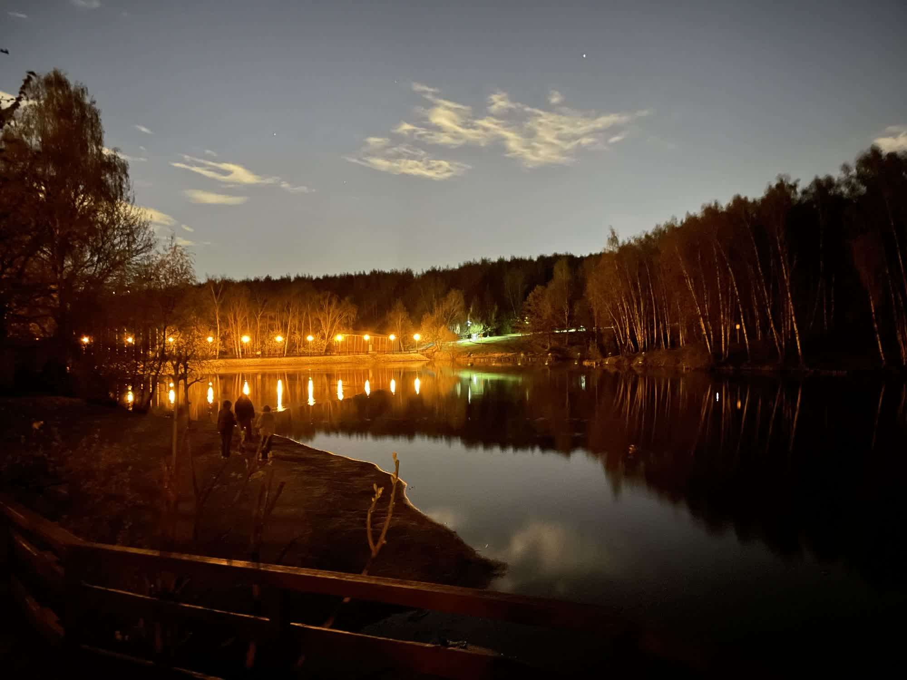
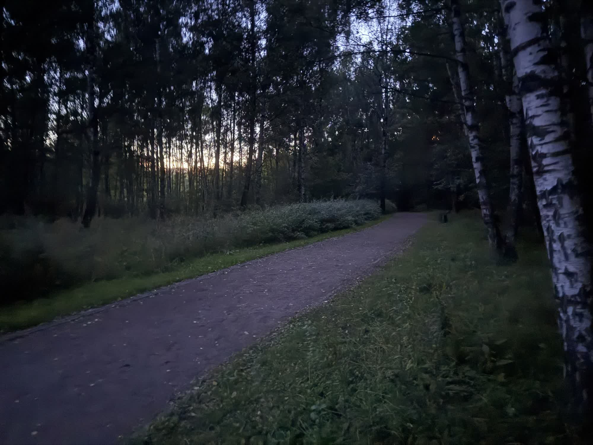

Фото



Ландшафтный заказник «Тёплый Стан» — особо охраняемая природная территория на юго-западе Москвы. Это не столько парк, сколько настоящий лесной массив, оказавшийся внутри городской черты.
Территория расположена на Теплостанской возвышенности — самом высоком холме Москвы.
Здесь берёт начало река Очаковка, пересекающая весь заказник, а в лесах сохранились древние славянские курганы XI–XIII веков.
Заказник подойдёт тем, кто ищет уединённые прогулки по настоящему лесу, не покидая пределов города.
© Все права защищены.